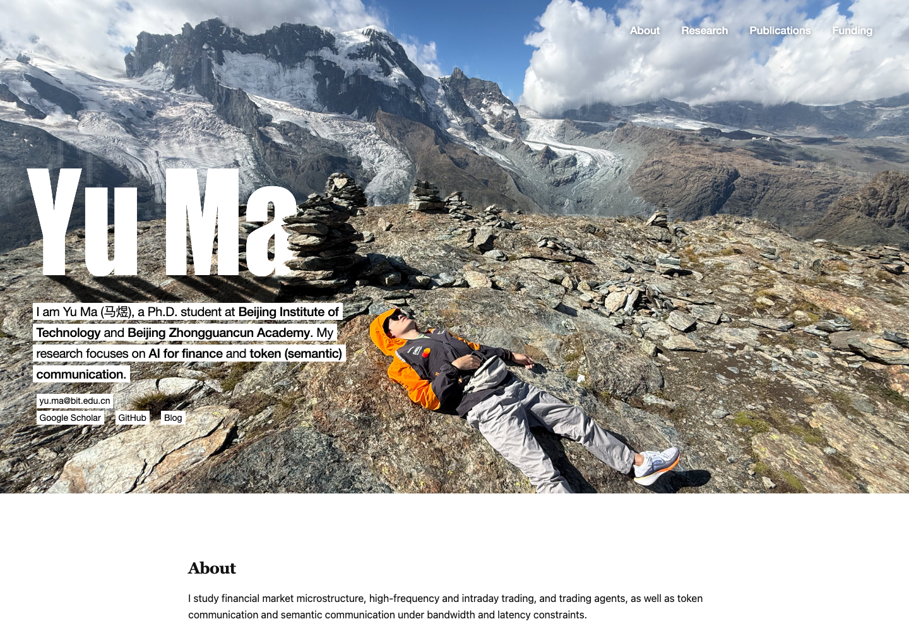
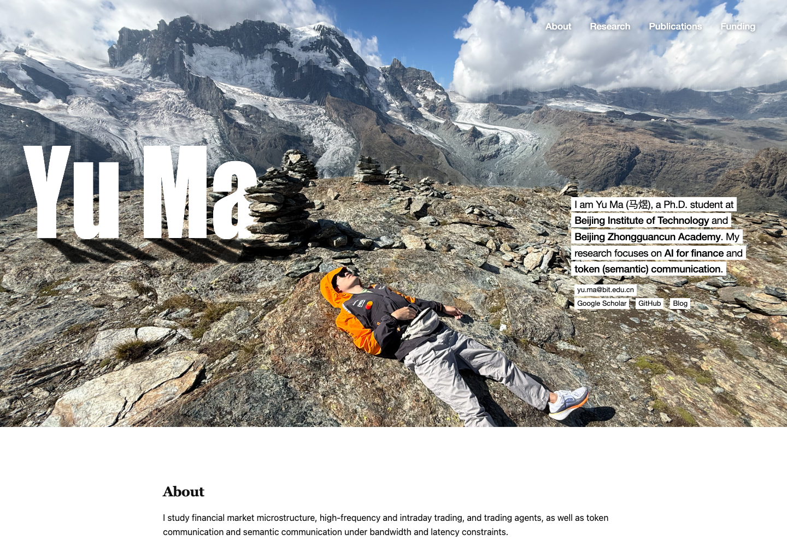
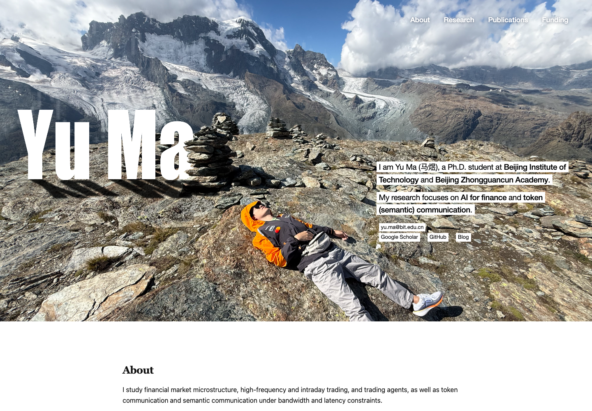

Left · smaller type
20px type in the original position.
Mobile previewWhite printed lines, smaller type, four ways to place the introduction in the landscape.

20px type in the original position.
Mobile preview20px type in an open column above the person’s right side.
Mobile preview
18.5px type in a narrow column at the right edge.
Mobile preview
19px type separates identity and research into two passages.
Mobile preview